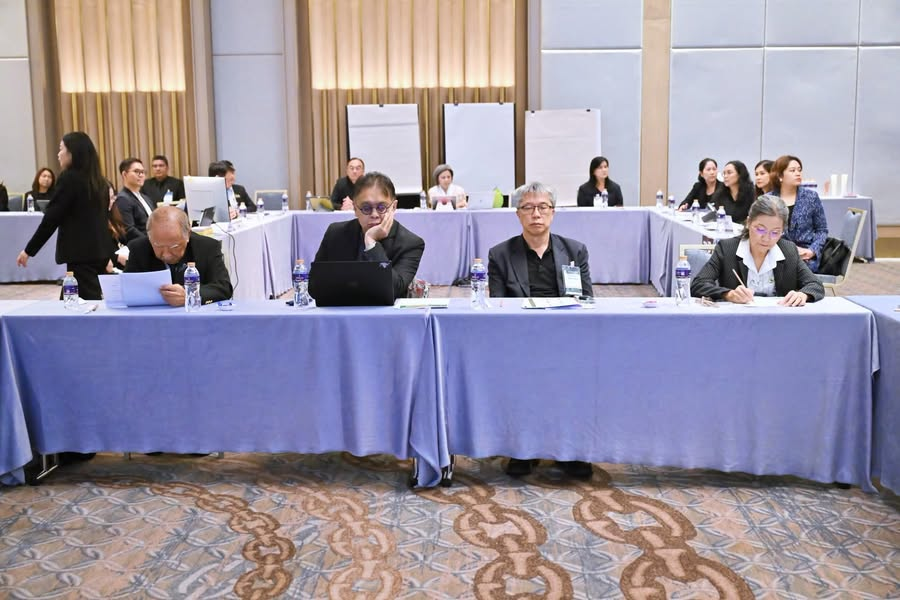

มองมหาวิทยาลัยอีก 20 ปี ต้องคิดให้พ้นจากมหาวิทยาลัยวันนี้
{kind=link}

ผมได้รับเชิญไปร่วมงาน KU Strategic Foresight เพื่อแลกเปลี่ยนมุมมองว่ามหาวิทยาลัยเกษตรศาสตร์ควรเป็นอย่างไรในอีก 20 ปี ผู้เข้าร่วมมีทั้งผู้บริหาร อดีตผู้บริหาร นิสิต บุคลากร นิสิตเก่า ภาครัฐ ภาคเอกชน และผู้มีส่วนได้ส่วนเสียกลุ่มต่าง ๆ
กิจกรรมเปิดพื้นที่ให้เห็นความห่วงใยและมุมมองที่หลากหลาย แต่คำถามสำคัญของ foresight คือ เราจะคิดให้ไกลกว่าความสำเร็จในอดีต โครงสร้างปัจจุบัน และคำศัพท์ที่คุ้นเคยได้เพียงใด
1. Demand ของหลักสูตรไม่เท่ากับ demand ของประเทศ
แนวคิดว่าไม่ควรสอนเฉพาะสิ่งที่มหาวิทยาลัยอยากสอน แต่ควรดูความต้องการของผู้เรียนและตลาด มีเหตุผลในตัวเอง อย่างไรก็ตาม หากใช้ demand ปัจจุบันเป็นเข็มทิศเพียงอย่างเดียว มหาวิทยาลัยอาจผลิตเฉพาะคนที่ระบบเศรษฐกิจวันนี้พร้อมจ้าง และละเลยความสามารถที่ประเทศยังไม่ได้สร้างพื้นที่รองรับ
คนระดับปริญญาโทและเอกมีความสำคัญต่อการพัฒนาองค์ความรู้และเทคโนโลยีของประเทศ แต่ผู้สำเร็จการศึกษาจำนวนหนึ่งไม่มีตำแหน่งงานที่ใช้ความรู้ระดับนั้นจริง หากจะออกแบบหลักสูตรตาม demand เราจึงต้องถามคู่กันว่า ประเทศและมหาวิทยาลัยกำลังสร้าง demand สำหรับคนความรู้ขั้นสูงเพียงพอหรือยัง
มหาวิทยาลัยไม่ควรเพียงตามตลาดแรงงาน แต่ต้องมีบทบาทสร้างงานวิจัย โครงสร้างพื้นฐาน อุตสาหกรรมใหม่ และความร่วมมือที่ทำให้ความรู้ขั้นสูงถูกนำไปใช้ได้จริง มิฉะนั้นการปรับหลักสูตรให้ตรงตลาดอาจกลายเป็นการยอมรับข้อจำกัดของโครงสร้างเศรษฐกิจปัจจุบันเป็นอนาคตถาวร
2. Reskill และ upskill มีเศรษฐศาสตร์ที่ไม่ควรถูกซ่อน
การยกระดับทักษะไม่ใช่เพียงนำเนื้อหาเดิมมาตัดให้สั้นลง ยิ่งเป็นทักษะขั้นสูง เนื้อหายิ่งลึก กลุ่มผู้เรียนที่มีพื้นฐานเพียงพอยิ่งแคบ ผู้สอนและทรัพยากรยิ่งเฉพาะทาง และต้นทุนต่อผู้เรียนยิ่งสูงขึ้น
ตัวอย่างเช่น หลักสูตร AI ขั้นสูงอาจมีผู้เรียนไม่มาก แต่ต้องใช้ผู้เชี่ยวชาญ ระบบคอมพิวเตอร์ ข้อมูล และเวลาเตรียมการสูง ในขณะเดียวกัน สังคมกลับคาดหวังให้มหาวิทยาลัยเปิดในราคาถูกมากหรือแทบไม่คิดค่าใช้จ่าย ความคาดหวังคุณภาพสูง เนื้อหาลึก ผู้เรียนกลุ่มเล็ก และราคาต่ำไม่สามารถเกิดขึ้นพร้อมกันได้โดยไม่มีผู้รับภาระต้นทุน
หากประเทศมอง reskill/upskill เป็นโครงสร้างพื้นฐานเพื่อการแข่งขัน ต้องมีกลไกสนับสนุนที่จริงจัง อาจเป็นกองทุน เครดิตการเรียนรู้ การร่วมจ่ายจากนายจ้าง หรือการจัดซื้อหลักสูตรเพื่อเป้าหมายสาธารณะ ไม่ควรผลักภาระทั้งหมดให้มหาวิทยาลัยแล้วประเมินความสำเร็จเพียงจำนวนคนเข้าเรียน
3. อัตลักษณ์เป็นฐาน ไม่ใช่ขอบเขตของจินตนาการ
อาหารและเกษตรเป็นรากฐานสำคัญของมหาวิทยาลัยเกษตรศาสตร์ แต่การมองอีก 20 ปีต้องเห็นแรงเปลี่ยนที่กระทบสังคม เศรษฐกิจ และความเป็นมนุษย์ในระดับลึก ทั้ง AI สังคมสูงวัย พลังงาน ภูมิอากาศ ระบบชีวภาพ และเทคโนโลยีควอนตัม
ประเด็นเหล่านี้ไม่จำเป็นต้องแข่งขันกับอัตลักษณ์เดิม ตรงกันข้าม มหาวิทยาลัยสามารถใช้ความลึกด้านเกษตร อาหาร ทรัพยากร และวิศวกรรมเป็นฐานเชื่อมเข้าสู่โจทย์ใหม่ แต่ต้องไม่ปล่อยให้คำที่คุ้นเคยทำหน้าที่เป็นเพดานของสิ่งที่มองเห็น
4. หลักสูตรอาจไม่ใช่หน่วยพื้นฐานของทุกคำตอบ
เมื่อพูดถึงอนาคตของมหาวิทยาลัย การสนทนามักเริ่มด้วยคำว่า “หลักสูตร” แต่ในอนาคต การเรียนรู้อาจถูกจัดเป็นโครงการ ปัญหาจริง ห้องทดลอง เครือข่าย mentor โมดูลความสามารถ หรือเส้นทางที่ประกอบจากหลายสถาบันและหลายช่วงชีวิต
หลักสูตรยังมีความสำคัญในฐานะโครงสร้างรับรองความต่อเนื่องและมาตรฐาน แต่ไม่ควรถูกใช้เป็นคำตอบแรกของทุกปัญหา บางโจทย์ต้องการ research platform บางโจทย์ต้องการ community บางโจทย์ต้องการ shared facility และบางโจทย์ต้องการโอกาสให้คนต่างวัยต่างสาขามาสร้างสิ่งหนึ่งร่วมกัน
5. AI ไม่ใช่อีกหนึ่งเทคโนโลยีที่ค่อยปรับตามได้เสมอ
หลายคนเห็นแล้วว่า AI จะส่งผลหนักต่อมหาวิทยาลัยและสังคม แต่อีกส่วนยังมองว่าเป็นเครื่องมือใหม่ที่ค่อย ๆ เพิ่มเข้าไปในงานเดิมได้ การมองแบบหลังอาจประเมินการเปลี่ยนแปลงต่ำไป เพราะ AI กำลังเปลี่ยนต้นทุนของความรู้ การผลิตเนื้อหา การทำวิจัย การประเมินผล และคุณค่าของงานทางปัญญาหลายประเภทพร้อมกัน
การทำ foresight จึงต้องมี AI literacy เพียงพอ ไม่ใช่เพื่อทำนายว่าเครื่องมือใดจะชนะ แต่เพื่อมองเห็นว่าสมมติฐานใดของมหาวิทยาลัยกำลังถูกทำให้ไม่จริง เช่น การเข้าถึงเนื้อหายาก การประเมินจากชิ้นงานปลายทาง หรือการจัดความรู้ตามขอบเขตสาขาเดิม
6. นโยบายวันนี้เป็นบริบท ไม่ใช่ขอบฟ้าของอนาคต
นโยบายกระทรวงปัจจุบันมีความสำคัญต่อการดำเนินงาน แต่ strategic foresight ระยะ 20 ปีไม่ควรถูกจำกัดด้วยนโยบาย โครงสร้างหน่วยงาน หรือกติกาที่มีอยู่ในวันนี้ ในช่วงเวลานั้น รูปแบบมหาวิทยาลัย การทำงาน และแม้แต่ความหมายของคำว่า “การศึกษา” อาจเปลี่ยนไปมาก
การเริ่มจากข้อจำกัดปัจจุบันเพียงอย่างเดียวมักทำให้ได้อนาคตที่เป็นส่วนต่อขยายของแผนเดิม ขณะที่ foresight ควรช่วยให้องค์กรเห็น discontinuity สำรวจหลายฉากทัศน์ และย้อนกลับมาถามว่าวันนี้ควรสร้างความสามารถหรือทางเลือกใดไว้ก่อน
คำถามสุดท้ายไม่ใช่ “ทำให้ดีขึ้นอย่างไร” เพียงอย่างเดียว
กิจกรรมครั้งนี้มีคุณค่ามาก เพราะทำให้คนหลายกลุ่มได้ฟังกันและเห็นความห่วงใยต่ออนาคตของมหาวิทยาลัย ขั้นต่อไปคือเปลี่ยนมุมมองเหล่านั้นเป็นสมมติฐานที่ทดสอบได้ ฉากทัศน์ที่ต่างกัน และการทดลองที่ช่วยให้องค์กรเรียนรู้ก่อนตัดสินใจขนาดใหญ่
การมองอนาคต 20 ปีไม่ใช่เพียงถามว่าเราจะทำสิ่งที่ทำอยู่ให้ดีขึ้นอย่างไร แต่ต้องกล้าถามด้วยว่า สิ่งที่เราทำอยู่ในวันนี้จะยังจำเป็นอยู่หรือไม่ และหากไม่จำเป็น มหาวิทยาลัยควรเริ่มสร้างอะไรแทนตั้งแต่ตอนนี้